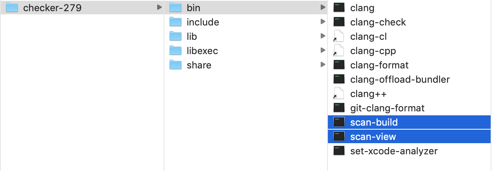
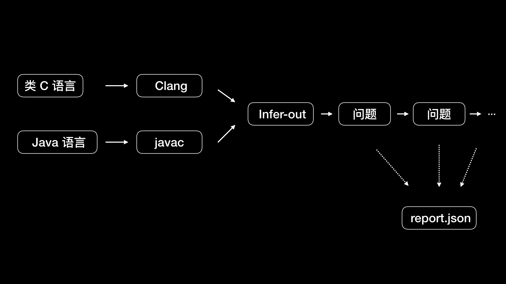

- 00 开篇词 锚定一个点，然后在这个点上深耕.md.html
- 01 建立你自己的iOS开发知识体系.md.html
- 02 App 启动速度怎么做优化与监控？.md.html
- 03 Auto Layout 是怎么进行自动布局的，性能如何？.md.html
- 04 项目大了人员多了，架构怎么设计更合理？.md.html
- 05 链接器：符号是怎么绑定到地址上的？.md.html
- 06 App 如何通过注入动态库的方式实现极速编译调试？.md.html
- 07 Clang、Infer 和 OCLint ，我们应该使用谁来做静态分析？.md.html
- 08 如何利用 Clang 为 App 提质？.md.html
- 09 无侵入的埋点方案如何实现？.md.html
- 10 包大小：如何从资源和代码层面实现全方位瘦身？.md.html
- 11 热点问题答疑（一）：基础模块问题答疑.md.html
- 12 iOS 崩溃千奇百怪，如何全面监控？.md.html
- 13 如何利用 RunLoop 原理去监控卡顿？.md.html
- 14 临近 OOM，如何获取详细内存分配信息，分析内存问题？.md.html
- 15 日志监控：怎样获取 App 中的全量日志？.md.html
- 16 性能监控：衡量 App 质量的那把尺.md.html
- 17 远超你想象的多线程的那些坑.md.html
- 18 怎么减少 App 电量消耗？.md.html
- 19 热点问题答疑（二）：基础模块问题答疑.md.html
- 20 iOS开发的最佳学习路径是什么？.md.html
- 21 除了 Cocoa，iOS还可以用哪些 GUI 框架开发？.md.html
- 22 细说 iOS 响应式框架变迁，哪些思想可以为我所用？.md.html
- 23 如何构造酷炫的物理效果和过场动画效果？.md.html
- 24 A_B 测试：验证决策效果的利器.md.html
- 25 怎样构建底层的发布和订阅事件总线？.md.html
- 26 如何提高 JSON 解析的性能？.md.html
- 27 如何用 Flexbox 思路开发？跟自动布局比，Flexbox 好在哪？.md.html
- 28 怎么应对各种富文本表现需求？.md.html
- 29 如何在 iOS 中进行面向测试驱动开发和面向行为驱动开发？.md.html
- 30 如何制定一套适合自己团队的 iOS 编码规范？.md.html
- 31 iOS 开发学习资料和书单推荐.md.html
- 32 热点问题答疑（三）.md.html
- 33 iOS 系统内核 XNU：App 如何加载？.md.html
- 34 iOS 黑魔法 Runtime Method Swizzling 背后的原理.md.html
- 35 libffi：动态调用和定义 C 函数.md.html
- 36 iOS 是怎么管理内存的？.md.html
- 37 如何编写 Clang 插件？.md.html
- 38 热点问题答疑（四）.md.html
- 39 打通前端与原生的桥梁：JavaScriptCore 能干哪些事情？.md.html
- 40 React Native、Flutter 等，这些跨端方案怎么选？.md.html
- 41 原生布局转到前端布局，开发思路有哪些转变？.md.html
- 42 iOS原生、大前端和Flutter分别是怎么渲染的？.md.html
- 43 剖析使 App 具有动态化和热更新能力的方案.md.html
- 用户故事 我是如何学习这个专栏的？.md.html
- 结束语 慢几步，深几度.md.html
- 捐赠
07 Clang、Infer 和 OCLint ，我们应该使用谁来做静态分析？
你好，我是戴铭。
随着业务开发迭代速度越来越快，完全依赖人工保证工程质量也变得越来越不牢靠。所以，静态分析，这种可以帮助我们在编写代码的阶段就能及时发现代码错误，从而在根儿上保证工程质量的技术，就成为了iOS开发者最常用到的一种代码调试技术。
Xcode 自带的静态分析工具 Analyze，通过静态语法分析能够找出在代码层面就能发现的内存泄露问题，还可以通过上下文分析出是否存在变量无用等问题。但是，Analyze 的功能还是有限，还是无法帮助我们在编写代码的阶段发现更多的问题。所以，这才诞生出了功能更全、定制化高、效率高的第三方静态检查工具。比如，OCLint、Infer、Clang静态分析器等。
一款优秀的静态分析器，能够帮助我们更加全面的发现人工测试中的盲点，提高检查问题的效率，寻找潜在的可用性问题，比如空指针访问、资源和内存泄露等等。
同时，静态分析器还可以检查代码规范和代码可维护性的问题，根据一些指标就能够找出哪些代码需要优化和重构。这里有三个常用的复杂度指标，可以帮助我们度量是否需要优化和重构代码。
圈复杂度高。圈复杂度，指的是遍历一个模块时的复杂度，这个复杂度是由分支语句比如 if、case、while、for，还有运算符比如 &&、||，以及决策点，共同确定的。一般来说，圈复杂度在以 4 以内是低复杂度，5到7是中复杂度，8到10是高复杂度，11以上时复杂度就非常高了，这时需要考虑重构，不然就会因为测试用例的数量过高而难以维护。- 而这个圈复杂度的值，是很难通过人工分析出来的。而静态分析器就可以根据圈复杂度规则，来监控圈复杂度，及时发现代码是否过于复杂，发现问题后及早解决，以免造成代码过于复杂难以维护。
NPath 复杂度高。NPath 度量是指一个方法所有可能执行的路径数量。一般高于200就需要考虑降低复杂度了。
NCSS 度量高。NCSS 度量是指不包含注释的源码行数，方法和类过大会导致代码维护时阅读困难，大的 NCSS 值表示方法或类做的事情太多，应该拆分或重构。一般方法行数不过百，类的行数不过千。
但是，使用静态分析技术来保证工程质量，也并不尽如人意，还有如下两大缺陷：
需要耗费更长的时间。相比于编译过程，使用静态分析技术发现深层次程序错误时，会对当前分析的方法、参数、变量去和整个工程关联代码一起做分析。所以，随着工程代码量的增加，每一步分析所依赖的影响面都会增大，所需耗时就更长。- 虽然我们在设计静态分析器时，就已经对其速度做了很多优化，但还是达不到程序编译的速度。因为静态分析本身就包含了编译最耗时的 IO 和语法分析阶段，而且静态分析的内容多于编译，所以再怎么优化，即使是最好的情况也会比编译过程来得要慢。
静态分析器只能检查出那些专门设计好的、可查找的错误。对于特定类型的错误分析，还需要开发者靠自己的能力写一些插件并添加进去。
好了，现在我们已经了解了静态分析器的优缺点，那么面对繁多的iOS 的静态代码检查工具，我们到底应该选择哪一个呢？
接下来，我选择了3款主流的静态分析工具OCLint、Clang静态分析器、Infer，和你说说如何选择的问题。
OCLint
OCLint 是基于 Clang Tooling 开发的静态分析工具，主要用来发现编译器检查不到的那些潜在的关键技术问题。2017年9月份新发布的 OCLint 0.13版本中，包含了71条规则。
这些规则已经基本覆盖了具有通用性的规则，主要包括语法上的基础规则、Cocoa 库相关规则、一些约定俗成的规则、各种空语句检查、是否按新语法改写的检查、命名上长变量名短变量名检查、无用的语句变量和参数的检查。
除此之外，还包括了和代码量大小是否合理相关的一些规则，比如过大的类、类里方法是否太多、参数是否过多、Block 嵌套是否太深、方法里代码是否过多、圈复杂度的检查等。
你可以在官方规则索引中，查看完整的规则说明。
这些规则可以在运行时被动态地加载到系统中，规则配置灵活、可扩展性好、方便自定义。
说到OCLint的安装方式，我建议你使用 Homebrew的方式。Homebrew 是 macOS 下专门用来进行软件包管理的一个工具，使用起来很方便，让你无需关心一些依赖和路径配置。
使用 Homebrew的方式安装时，我们需要首先设置brew的第三方仓库，然后安装OCLint。安装方法是在终端输入：
brew tap oclint/formulae
brew install oclint
安装完成，先编写一个 Hello world 代码来测试下，创建一个 Hello.m 文件来编写代码，使用 OCLint 来检查下前面编写的 Hello.m ，在终端输入如下命令：
oclint Hello.m
然后，我们可以使用下面的命令，将检查结果生成为一个HTML格式的报告：
oclint -report-type html -o report.html Hello.m
Clang 静态分析器
Clang 静态分析器（Clang Static Analyzer）是一个用 C++ 开发的，用来分析 C、C++ 和 Objective-C 的开源工具，是 Clang 项目的一部分，构建在 Clang 和 LLVM 之上。Clang 静态分析器的分析引擎用的就是 Clang 的库。
Clang 静态分析器专门为速度做过优化，可以在保证查出错误的前提下，使用更聪明的算法减少检查的工作量。
你可以点击这里下载Clang静态分析器，然后解压就可以了，不需要放到特定目录下。而卸载它的话，删除这个解压后的目录即可。
在Clang静态分析器中，常用的就是 scan-build 和 scan-view这两个工具。
scan-build 和 scan-view 所在的目录路径，如下图所示。

图1 scan-build 和 scan-view 所在的目录路径
scan-build 是用来运行分析器的命令行工具；scan-view 包含了 scan-build 工具，会在 scan-build 执行完后将结果可视化。
scan-build 的原理是，将编译器构建改成另一个“假的”编译器来构建，这个“假的”编译器会执行 Clang 来编译，然后执行静态分析器分析你的代码。
scan-build的使用方法，也很简单，你只需要到项目目录下，使用如下命令即可：
\yourpath\scan-build -k -V make
关于scan-build的更多参数和使用说明，你可以点击这个链接查看。
Clang 静态分析器是由分析引擎(analyzer core)和 checkers 组成的。所有的 checker 都是基于底层分析引擎之上的。通过分析引擎提供的功能，我们可以编写新的 checker。
checker 架构能够方便用户扩展代码检查的规则，或者通过自定义来扩展bug 类型。如果你想编写自己的 checker，可以在 Clang 项目的 lib/StaticAnalyzer/Checkers 目录下找到示例参考，比如 ObjCUnusedIVarsChecker.cpp 就是用来检查是否有定义了，但是从未使用过的变量。
当然，如果为了编写自定义的 checker 一开始就埋头进去看那些示例代码是很难看懂的，你甚至都不能知道编写 checker 时有哪些方法可以为我所用。所以，你需要先了解 Clang 静态分析器提供了哪些功能接口，然后再参考官方的大量实例，去了解怎么使用这些功能接口，在这之后再动手开发才会事半功倍。
接下来，我就跟你聊聊开发 checker 时需要了解的 Clang 静态分析器提供的一些功能接口。
checker 的官方示例代码里有一个非常实用的，也就是内存泄露检查示例 MallocChecker，你可以点击这个链接查看代码。
在这段代码开头，我们可以看到引入了 clang/AST/ 和 clang/StaticAnalyzer/Core/PathSensitive/ 目录下的头文件。这两个目录下定义的接口功能非常强大，大部分 checker 都是基于此开发的。
clang/AST/ 目录中，有语法树遍历 RecursiveASTVisitor，还有语法树层级遍历 StmtVisitor，遍历过程中，会有很多回调函数可以让 Checker 进行检查。比如，方法调用前的回调 checkPreCall、方法调用后的回调 checkPostCall，CFG（Control Flow Graph 控制流程图） 分支调用时的回调 checkBranchCondition、CFG 路径分析结束时的回调 checkEndAnalysis 等等。有了这些回调，我们就可以从语法树层级和路径上去做静态检查的工作了。
clang/StaticAnalyzer/Core/PathSensitive/ 目录里，可以让 checker 检查变量和值上的更多变化。从目录 PathSensitive，我们也能看出这些功能叫做路径敏感分析（Path-Sensitive Analyses），是从条件分支上去跟踪，而这种跟踪是跟踪每一种分支去做分析。
但是，要去追踪所有路径的话，就可能会碰到很多复杂情况，特别是执行循环后，问题会更复杂，需要通过路径合并来简化复杂的情况，但是简化后可能就不会分析出所有的路径。所以，考虑到合理性问题的话，我们还是需要做些取舍，让其更加合理，达到尽量输出更多信息的目的，来方便我们开发 checker，检查出更多的 bug 。
路径敏感分析也包含了模拟内存管理，SymbolManager 符号管理里维护着变量的生命周期分析。想要了解具体实现的话，你可以点击这个链接参看源码实现。
这个内存泄露检查示例 MallocChecker 里，运用了 Clang 静态分析器提供的语法树层级节点检查、变量值路径追踪以及内存管理分析功能接口，对我们编写自定义的 checker 是一个很全面、典型的示例。
追其根本，编写自己的 checker ，其核心还是要更多地掌握 Clang 静态分析器的内在原理。很早之前，苹果公司就在 LLVM Developers Meeting 上，和我们分享过怎样通过 Clang 静态分析器去找 bug。你可以点击这个链接，查看相应的PPT，这对我们了解 Clang 静态分析器的原理有很大的帮助。
不过，checker 架构也有不完美的地方，比如每执行完一条语句，分析引擎需要回去遍历所有 checker 中的回调函数。这样的话，随着 checker 数量的增加，整体检查的速度也会变得越来越慢。
如果你想列出当前 Clang 版本下的所有 checker，可以使用如下命令：
clang —analyze -Xclang -analyzer-checker-help
下面显示的就是常用的 checker：
debug.ConfigDumper 配置表
debug.DumpCFG 显示控制流程图
debug.DumpCallGraph 显示调用图
debug.DumpCalls 打印引擎遍历的调用
debug.DumpDominators 打印控制流程图的 dominance tree
debug.DumpLiveVars 打印实时变量分析结果
debug.DumpTraversal 打印引擎遍历的分支条件
debug.ExprInspection 检查分析器对表达式的理解
debug.Stats 使用分析器统计信息发出警告
debug.TaintTest 标记污染的符号
debug.ViewCFG 查看控制流程图
debug.ViewCallGraph 使用 GraphViz 查看调用图
debug.ViewExplodedGraph 使用 GraphViz 查看分解图
接下来，我和你举个例子来说明如何使用 checker 。我们先写一段代码：
int main()
{
int a;
int b = 10;
a = b;
return a;
}
接下来，我们使用下面这条命令，调用 DumpCFG 这个 checker 对上面代码进行分析：
clang -cc1 -analyze -analyzer-checker=debug.DumpCFG
显示结果如下：
int main()
[B2 (ENTRY)]
Succs (1): B1
[B1]
1: int a;
2: 10
3: int b = 10;
4: b
5: [B1.4] (ImplicitCastExpr, LValueToRValue, int)
6: a
7: [B1.6] = [B1.5]
8: a
9: [B1.8] (ImplicitCastExpr, LValueToRValue, int)
10: return [B1.9];
Preds (1): B2
Succs (1): B0
[B0 (EXIT)]
Preds (1): B
可以看出，代码的控制流程图被打印了出来。控制流程图会把程序拆得更细，可以把执行过程表现得更直观，有助于我们做静态分析。
Infer
Infer是Facebook 开源的、使用 OCaml 语言编写的静态分析工具，可以对 C、Java 和 Objective-C 代码进行静态分析，可以检查出空指针访问、资源泄露以及内存泄露。
Infer 的安装，有从源码安装和直接安装 binary releases 两种方式。
如果想在 macOS 上编译源码进行安装的话，你需要预先安装一些工具，这些工具在后面编译时会用到，命令行指令如下：
brew install autoconf automake cmake opam pkg-config sqlite gmp mpfr
brew cask install java
你可以使用如下所示的命令，通过编译源码来安装：
# Checkout Infer
git clone https://github.com/facebook/infer.git
cd infer
# Compile Infer
./build-infer.sh clang
# install Infer system-wide...
sudo make install
# ...or, alternatively, install Infer into your PATH
export PATH=`pwd`/infer/bin:$PATH
使用源码安装所需的时间会比较长，因为会编译一个特定的 Clang 版本，而 Clang 是个庞大的工程，特别是第一次编译的耗时会比较长。我在第一次编译时，就大概花了一个多小时。所以，直接安装 binary releases 会更快些，在终端输入：
brew install infer
Infer就安装好了。
接下来，我通过一个示例和你分享下如何使用 Infer。我们可以先写一段Objective-C 代码：
#import <Foundation/Foundation.h>
@interface Hello: NSObject
@property NSString* s;
@end
@implementation Hello
NSString* m() {
Hello* hello = nil;
return hello->_s;
}
@end
在终端输入：
infer -- clang -c Hello.m
结果如下：
Capturing in make/cc mode...
Found 1 source file to analyze in /Users/ming/Downloads/jikeshijian/infer-out
Starting analysis...
legend:
"F" analyzing a file
"." analyzing a procedure
F.
*Found 5 issues*
hello.m:10: error: NULL_DEREFERENCE
pointer `hello` last assigned on line 9 could be null and is dereferenced at line 10, column 12.
8. NSString* m() {
9. Hello* hello = nil;
10. *>* return hello->_s;
11. }
hello.m:10: warning: DIRECT_ATOMIC_PROPERTY_ACCESS
Direct access to ivar `_s` of an atomic property at line 10, column 12. Accessing an ivar of an atomic property makes the property nonatomic.
8. NSString* m() {
9. Hello* hello = nil;
10. *>* return hello->_s;
11. }
hello.m:4: warning: ASSIGN_POINTER_WARNING
Property `s` is a pointer type marked with the `assign` attribute at line 4, column 1. Use a different attribute like `strong` or `weak`.
2.
3. @interface Hello: NSObject
4. *>*@property NSString* s;
5. @end
6.
hello.m:10: warning: DIRECT_ATOMIC_PROPERTY_ACCESS
Direct access to ivar `_s` of an atomic property at line 10, column 12. Accessing an ivar of an atomic property makes the property nonatomic.
8. NSString* m() {
9. Hello* hello = nil;
10. *>* return hello->_s;
11. }
hello.m:4: warning: ASSIGN_POINTER_WARNING
Property `s` is a pointer type marked with the `assign` attribute at line 4, column 1. Use a different attribute like `strong` or `weak`.
2.
3. @interface Hello: NSObject
4. *>*@property NSString* s;
5. @end
6.
*Summary of the reports*
DIRECT_ATOMIC_PROPERTY_ACCESS: 2
ASSIGN_POINTER_WARNING: 2
NULL_DEREF
可以看出，我们前面的 hello.m 代码里一共有五个问题，其中包括一个错误、四个警告。第一个错误如下：
hello.m:10: error: NULL_DEREFERENCE
pointer `hello` last assigned on line 9 could be null and is dereferenced at line 10, column 12.
8. NSString* m() {
9. Hello* hello = nil;
10. *>* return hello->_s;
11. }
这个错误的意思是， hello 可能为空，需要去掉第10行12列的引用。我把这行代码做下修改，去掉引用：
return hello.s;
再到终端运行一遍 infer 命令：
infer -- clang -c Hello.m
然后，就发现只剩下了一个警告:
hello.m:4: warning: ASSIGN_POINTER_WARNING
Property `s` is a pointer type marked with the `assign` attribute at line 4, column 1. Use a different attribute like `strong` or `weak`.
2.
3. @interface Hello: NSObject
4. *>*@property NSString* s;
5. @end
6.
这个警告的意思是说，属性 s 是指针类型，需要使用 strong 或 weak 属性。这时，我将s 的属性修改为 strong：
@property(nonatomic, strong) NSString* s;
运行 Infer 后，发现没有问题了。
Capturing in make/cc mode...
Found 1 source file to analyze in /Users/ming/Downloads/jikeshijian/infer-out
Starting analysis...
legend:
"F" analyzing a file
"." analyzing a procedure
F.
*No issues found
接下来，为了帮助你理解Infer的工作原理，我来梳理下Infer 工作的流程：
第一个阶段是转化阶段，将源代码转成 Infer 内部的中间语言。类 C语言使用 Clang 进行编译，Java语言使用 javac 进行编译，编译的同时转成中间语言，输出到 infer-out 目录。
第二个阶段是分析阶段，分析infer-out 目录下的文件。分析每个方法，如果出现错误的话会继续分析下一个方法，不会被中断，但是会记录下出错的位置，最后将所有出错的地方进行汇总输出。- 默认情况下，每次运行infer命令都会删除之前的 infer-out 文件夹。你可以通过 –incremental 参数使用增量模式。增量模式下，运行infer命令不会删除 infer-out 文件夹，但是会利用这个文件夹进行 diff，减少分析量。- 一般进行全新一轮分析时直接使用默认的非增量模式，而对于只想分析修改部分情况时，就使用增量模式。
Infer 检查的结果，在 infer-out 目录下，是 JSON 格式的，名字叫做 report.json 。生成JSON格式的结果，通用性会更强，集成到其他系统时会更方便。
Infer 的工作流程图如下：

图2 Infer 的工作流程图
小结
在今天这篇文章中，我和你一一分析了Clang 静态分析器、Infer和OCLint 这三个 iOS 静态分析工具。对于 iOS 的静态分析，这三个工具都是基于 Clang 库开发的。
其中 Clang 静态分析器和 Xcode的集成度高，也支持命令行。不过，它们检查的规则少，基本都是只能检查出较大的问题，比如类型转换问题，而对内存泄露问题检查的侧重点则在于可用性。
OCLint 检查规则多、定制性强，能够发现很多潜在问题。但缺点也是检查规则太多，反而容易找不到重点；可定制度过高，导致易用性变差。
Infer 的效率高，支持增量分析，可小范围分析。可定制性不算最强，属于中等。
综合来看，Infer 在准确性、性能效率、规则、扩展性、易用性整体度上的把握是做得最好的，我认为这些是决定静态分析器好不好最重要的几点。所以，我比较推荐的是使用 Infer 来进行代码静态分析。
课后作业
我们今天提到的三款静态分析工具都是基于 Clang 库来开发的。那么请你来说下，Clang 给这三款工具提供了什么能力呢？
感谢你的收听，欢迎你在评论区给我留言分享你的观点，也欢迎把它分享给更多的朋友一起阅读。
© 2019 - 2023 Liangliang Lee. Powered by gin and hexo-theme-book.